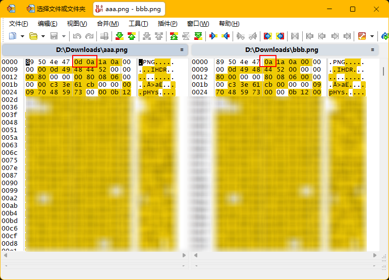

一个严谨的.gitattributes文件
2026年05月14日 星期四一个严谨的Git项目库应该有.gitattributes文件，来让Git在不同操作系统和场景环境下，根据设定的规则处理文件。
.gitattributes文件的常见用途有：
-
统一行尾符（CRLF / LF） 防止 Windows 和 Mac/Linux 协作时因换行符不一致产生大量假改动。 例如：
* text=auto让 Git 自动处理，或*.js text eol=lf强制 JS 文件用 LF。 -
指定二进制文件 避免 Git 对图片、压缩包等二进制文件尝试合并或输出乱码 diff。 例如：
*.png binary。 -
定义 diff 策略 某些生成文件（如锁文件、压缩后的代码）不想看普通 diff，可以标记为
-diff或指定自定义 diff 工具。 例如：*.lock binary或*.ipynb diff=jupyternotebook。 -
控制合并行为 指定某个文件在合并时始终使用某一版本（如
ours或theirs）。 例如：config.xml merge=ours。 -
过滤内容（配合 smudge / clean） 在检出/提交时自动执行脚本，比如对模板文件自动替换变量、对密钥文件做简单加解密。 例如：
*.secret filter=crypt。 -
影响 GitHub 的语言统计 让 GitHub 不把某些文件（如生成的代码、测试数据）算入项目的语言比例。 例如：
generated.js linguist-generated=true。
以我做的项目为例，一个严谨的.gitattributes文件是这样的：
# 1. 设置默认安全策略（放在最前面）
* text=auto
# 2. 对所有文本文件强制执行LF标准（覆盖全局）
# 这样能确保跨平台的基线统一
* text eol=lf
# 3. 为Windows专属文件，单独打破规则，强制使用CRLF（放在后面）
# 这行规则的优先级高于上面的 '* text eol=lf'
*.bat text eol=crlf
*.cmd text eol=crlf
*.ps1 text eol=crlf
# 4. 明确标记所有二进制文件（放在最后，作为终极保障）
# 这些规则会覆盖前面的所有文本处理规则，确保安全
*.png binary
*.jpg binary
*.jpeg binary
*.gif binary
*.ico binary
*.pdf binary
*.zip binary
*.mp3 binary
*.mp4 binary
*.mov binary
*.webp binary
*.bytes binary
# 5. LFS文件，对于大尺寸文件，要纳入LFS管理
# “-text”表示这个文件非文本文件
Assets/Resources/Data/Data.bytes filter=lfs diff=lfs merge=lfs -text
不写好.gitattributes会出现潜在的问题。
比如今天，我发现我司的Web后台重新部署之后，LOGO居然裂了，显示不出来。仔细一番研究比较之后，发现本地的png文件，和Git库中的，在文件头上有大差异：
本地版本
89 50 4E 47 0D 0A 1A 0A
Git库内版本
89 50 4E 47 0A 1A 0A

显然是Git在提交时，把CRLF改成了LF。